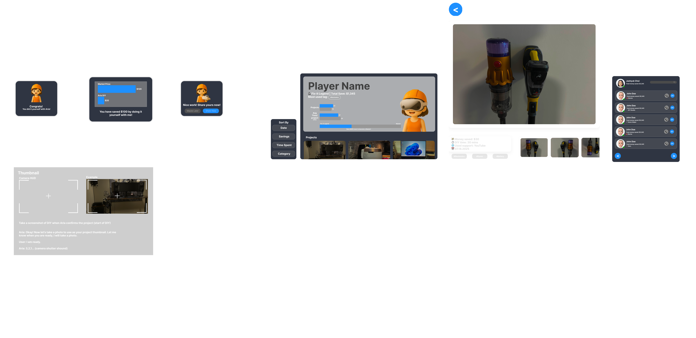

Aria
An AR AI assistant for Meta Quest 3 that guides people through DIY projects in real time.
- Role
- Gamification, UI & UX Design
- Team
- Aria Spark, in collaboration with Meta
- Platform
- Meta Quest 3
- Genre
- AR AI assistant
- Timeline
- May – August 2025
Overview
Aria is an AR AI assistant for Meta Quest 3 that walks people through do-it-yourself projects while they work. Instead of stopping to check a tutorial, you keep your hands on the task and Aria follows along in the headset, responding as the project moves.
I worked on Aria with Aria Spark, in collaboration with Meta, between May and August 2025.
My contributions
Gamification · UI & UX Design
Interface design
The after-project flow
Most of my interface work sits around the moment a project ends: Aria confirms what was finished, shows what the user saved by doing it themselves, and offers to publish it to the Social Board. I designed that flow end to end — the congratulation and savings cards, the camera HUD that captures a project thumbnail, the profile screen that totals a user’s savings and levels, and the friends list.
- Designed the after-project flow, from the completion confirmation through the savings breakdown to sharing.
- Designed the camera HUD Aria uses to capture a project thumbnail, and scripted the exchange that walks the user through taking the shot.
- Designed the player profile screen, including project history, average time per project and the savings total.
- Redesigned and implemented improvements to the chat history interface.
- Designed the access request interface for the permissions Aria needs.
- Designed the AR safety warning panel shown when the headset needs to interrupt the user.

Working with Meta
Aria was developed in collaboration with Meta, and progress was reviewed on a two-week cycle.
- Took part in biweekly reviews with Meta and the studio’s venture-capital stakeholders, walking through build progress and agreeing what needed to be ready for the next milestone.
- Contributed to development of the Quest 3 AR assistant alongside the rest of the team.
Gamification & the Aria Social Board
Turning finished DIY projects into something worth sharing
The Social Board is the part of Aria where a finished project becomes visible to other people. Users post the projects they have completed, show a profile of their work, invite friends, and level up as they collaborate. I designed the flow in Figma and built the experience in Firebase Studio.
- Designed a cost-saving tracking system that records what a user saved by doing a project themselves rather than paying for it.
- Designed a level system that advances users as they complete projects and collaborate with others.
- Designed a categorizing system so projects can be sorted and browsed by type.
- Produced the Figma mock-ups behind the feature, including the Aria after-project flow and the Social Board itself.
- Implemented the Social Board in Firebase Studio.
AI-assisted art
Aria needed a character and a consistent icon set before there was art support on the project, so I generated them myself.
- Generated the Aria character assets and the project’s icon set using ChatGPT 4/5 and Google Gemini.
Research & documentation
Interaction decisions in the headset were backed by research and written up so the rest of the team could build against them.
- Researched hand interaction for the headset and wrote the Aria hand UX script.
- Researched AR safety and fed the findings into the in-headset warning design.
- Wrote the XR button UX script defining how buttons behave in the AR space.
- Ran and documented Aria’s first playtest.
- Produced technical document studies and the project’s first research write-up.
Results
- Developed in Collaboration with MetaCollaboration